library(ggplot2)
p <- ggplot(mpg) +
aes(displ, hwy) +
geom_point(aes(color=factor(cyl)))
p
p +
theme_bw() +
theme(
legend.position = c(0.99, 0.99),
legend.justification = c(1, 1)
)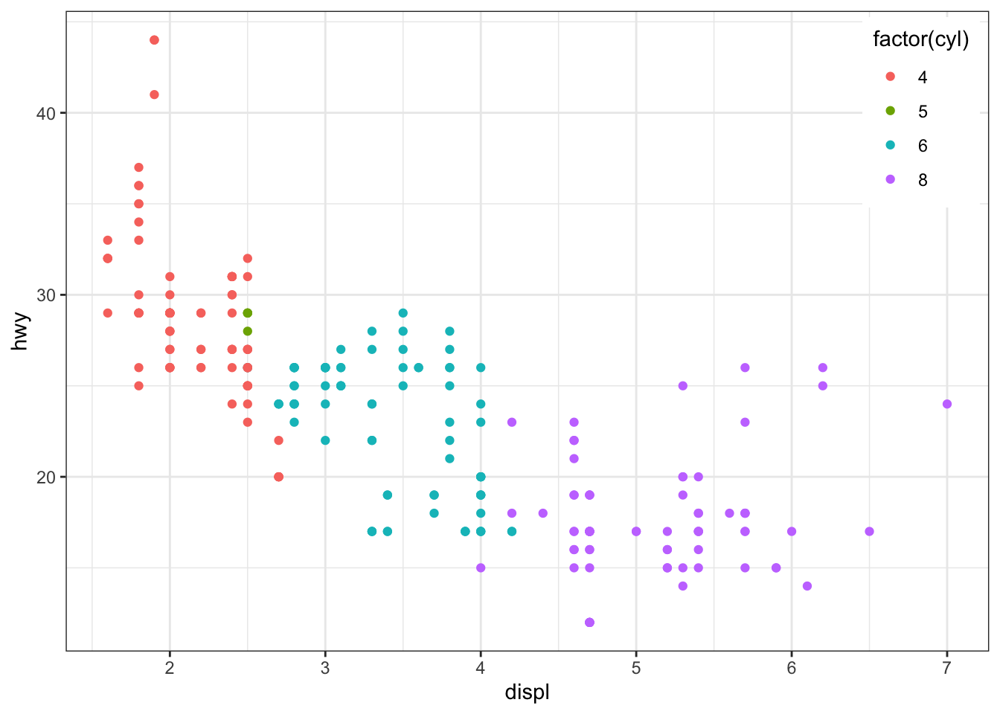
The central part of the theme system is the theme() function, which has 40+ configurable elements divided into 5 main categories: plot, axis, legend, panel and faceting elements. In those categories, individual elements are arranged in a hierarchical structure with self-explanatory names. For instance, plot.title controls the appearance of the plot title; axis.ticks.x, the ticks on the x axis, etc.
Each of these elements can be set with one of three basic types: element_text(), for text elements; element_line(), for lines, and element_rect(), for borders and backgrounds. Additionally, elements can be unset, or removed, with element_blank(), which draws nothing.
Themes can be built with a + theme(...) invocation by specifying each one of these elements to the desired style via the corresponding element function. However, there are many predefined themes available, and oftentimes it is much simpler to specify the theme that best suits our needs and then change small details via the theme() function. For example, here we change the default theme to theme_bw() and then we tweak the legend so that is displayed inside the plot, on the top-right corner.
library(ggplot2)
p <- ggplot(mpg) +
aes(displ, hwy) +
geom_point(aes(color=factor(cyl)))
p
p +
theme_bw() +
theme(
legend.position = c(0.99, 0.99),
legend.justification = c(1, 1)
)
ggplot2 comes with a number of built-in themes, and there are many ggplot2 extensions that are specifically dedicated to provide new themes. These themes can be set on a per-plot basis, as we did in the previous example, or you can set a global theme that replaces the default one.
theme_set(theme_classic())
p # now this uses the classic theme by default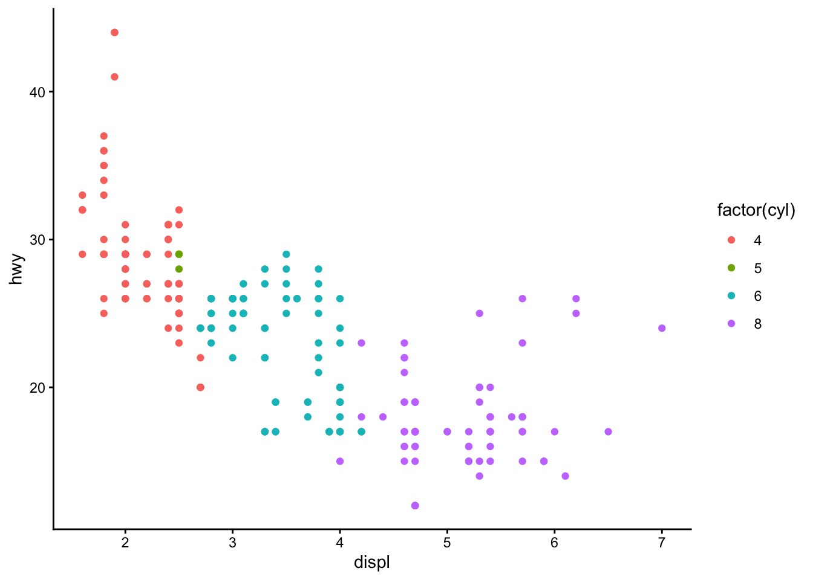
This global theme can be tweaked too via the theme_update() function, which accepts the same arguments as theme().
theme_update(
legend.position = c(0.99, 0.99),
legend.justification = c(1, 1)
)
p # now the legend is inside the plot by default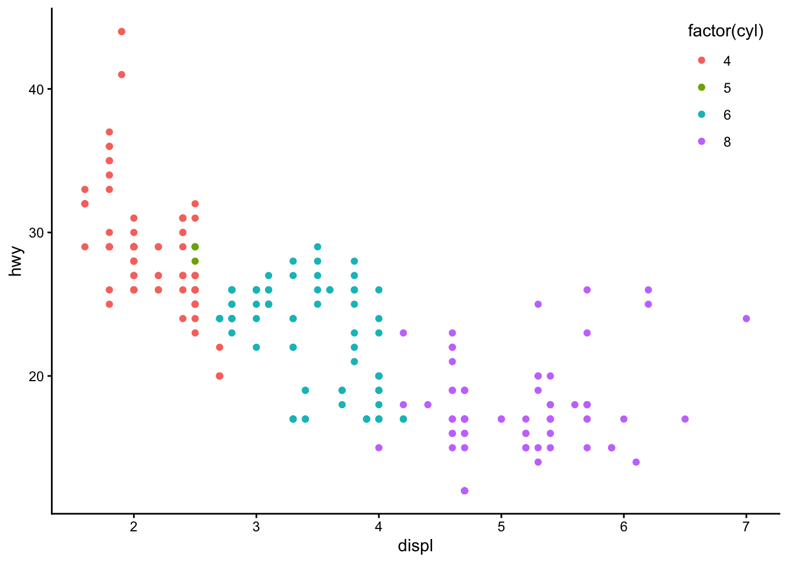
ggplot’s characteristic visual signature (grey background with white grid lines) is defined in theme_grey(), which is applied by default to all plots unless replaced as done previously.
theme_set(theme_grey())
p # back to the default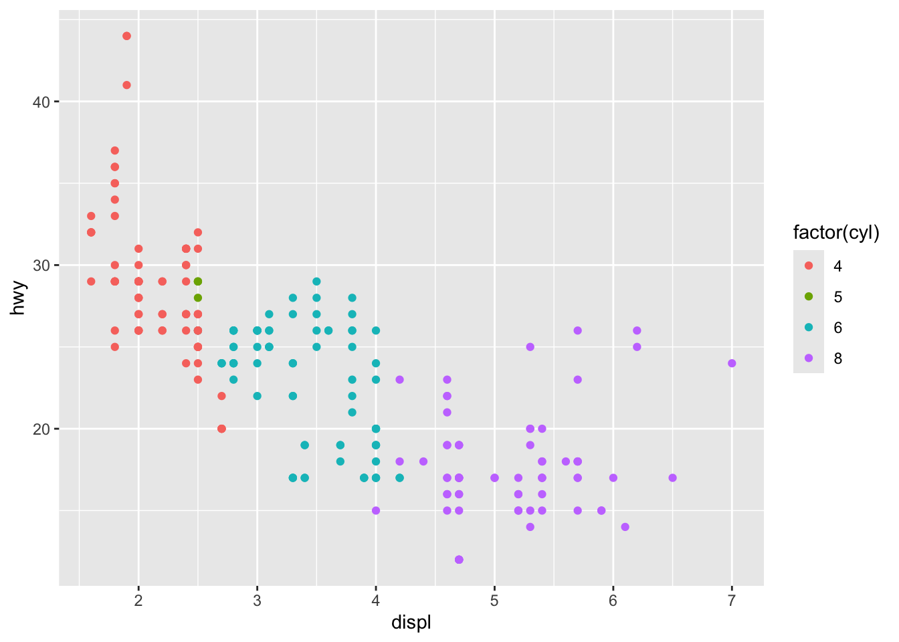
There are seven other built-in themes:
theme_bw(): a variation on theme_grey() that uses a white background and thin grey grid lines.
theme_linedraw(): A theme with only black lines of various widths on white backgrounds, reminiscent of a line drawing.
theme_light(): similar to theme_linedraw() but with light grey lines and axes, to direct more attention towards the data.
theme_dark(): the dark cousin of theme_light(), with similar line sizes but a dark background. Useful to make thin coloured lines pop out.
theme_minimal(): A minimalistic theme with no background annotations.
theme_classic(): A classic-looking theme, with x and y axis lines and no gridlines.
theme_void(): A completely empty theme.
Internally, themes are just a call to theme() that sets the complete set of parameters available to the appropriate values, like theme_grey:
# execute this line as is, without parentheses, to inspect the internals
theme_greyfunction (base_size = 11, base_family = "", header_family = NULL,
base_line_size = base_size/22, base_rect_size = base_size/22,
ink = "black", paper = "white", accent = "#3366FF")
{
half_line <- base_size/2
t <- theme(line = element_line(colour = ink, linewidth = base_line_size,
linetype = 1, lineend = "butt", linejoin = "round"),
rect = element_rect(fill = paper, colour = ink, linewidth = base_rect_size,
linetype = 1, linejoin = "round"), text = element_text(family = base_family,
face = "plain", colour = ink, size = base_size, lineheight = 0.9,
hjust = 0.5, vjust = 0.5, angle = 0, margin = margin(),
debug = FALSE), title = element_text(family = header_family),
spacing = unit(half_line, "pt"), margins = margin_auto(half_line),
point = element_point(colour = ink, shape = 19, fill = paper,
size = (base_size/11) * 1.5, stroke = base_line_size),
polygon = element_polygon(fill = paper, colour = ink,
linewidth = base_rect_size, linetype = 1, linejoin = "round"),
geom = element_geom(ink = ink, paper = paper, accent = accent,
linewidth = base_line_size, borderwidth = base_line_size,
linetype = 1L, bordertype = 1L, family = base_family,
fontsize = base_size, pointsize = (base_size/11) *
1.5, pointshape = 19), axis.line = element_blank(),
axis.line.x = NULL, axis.line.y = NULL, axis.text = element_text(size = rel(0.8),
colour = col_mix(ink, paper, 0.302)), axis.text.x = element_text(margin = margin(t = 0.8 *
half_line/2), vjust = 1), axis.text.x.top = element_text(margin = margin(b = 0.8 *
half_line/2), vjust = 0), axis.text.y = element_text(margin = margin(r = 0.8 *
half_line/2), hjust = 1), axis.text.y.right = element_text(margin = margin(l = 0.8 *
half_line/2), hjust = 0), axis.text.r = element_text(margin = margin(l = 0.8 *
half_line/2, r = 0.8 * half_line/2), hjust = 0.5),
axis.ticks = element_line(colour = col_mix(ink, paper,
0.2)), axis.ticks.length = rel(0.5), axis.ticks.length.x = NULL,
axis.ticks.length.x.top = NULL, axis.ticks.length.x.bottom = NULL,
axis.ticks.length.y = NULL, axis.ticks.length.y.left = NULL,
axis.ticks.length.y.right = NULL, axis.minor.ticks.length = rel(0.75),
axis.title.x = element_text(margin = margin(t = half_line/2),
vjust = 1), axis.title.x.top = element_text(margin = margin(b = half_line/2),
vjust = 0), axis.title.y = element_text(angle = 90,
margin = margin(r = half_line/2), vjust = 1), axis.title.y.right = element_text(angle = -90,
margin = margin(l = half_line/2), vjust = 1), legend.background = element_rect(colour = NA),
legend.spacing = rel(2), legend.spacing.x = NULL, legend.spacing.y = NULL,
legend.margin = NULL, legend.key = NULL, legend.key.size = unit(1.2,
"lines"), legend.key.height = NULL, legend.key.width = NULL,
legend.key.spacing = NULL, legend.text = element_text(size = rel(0.8)),
legend.title = element_text(hjust = 0), legend.ticks.length = rel(0.2),
legend.position = "right", legend.direction = NULL, legend.justification = "center",
legend.box = NULL, legend.box.margin = margin_auto(0),
legend.box.background = element_blank(), legend.box.spacing = rel(2),
panel.background = element_rect(fill = col_mix(ink, paper,
0.92), colour = NA), panel.border = element_blank(),
panel.grid = element_line(colour = paper), panel.grid.minor = element_line(linewidth = rel(0.5)),
panel.spacing = NULL, panel.spacing.x = NULL, panel.spacing.y = NULL,
panel.ontop = FALSE, strip.background = element_rect(fill = col_mix(ink,
paper, 0.85), colour = NA), strip.clip = "on", strip.text = element_text(colour = col_mix(ink,
paper, 0.1), size = rel(0.8), margin = margin_auto(0.8 *
half_line)), strip.text.x = NULL, strip.text.y = element_text(angle = -90),
strip.text.y.left = element_text(angle = 90), strip.placement = "inside",
strip.placement.x = NULL, strip.placement.y = NULL, strip.switch.pad.grid = unit(half_line/2,
"pt"), strip.switch.pad.wrap = unit(half_line/2,
"pt"), plot.background = element_rect(colour = paper),
plot.title = element_text(size = rel(1.2), hjust = 0,
vjust = 1, margin = margin(b = half_line)), plot.title.position = "panel",
plot.subtitle = element_text(hjust = 0, vjust = 1, margin = margin(b = half_line)),
plot.caption = element_text(size = rel(0.8), hjust = 1,
vjust = 1, margin = margin(t = half_line)), plot.caption.position = "panel",
plot.tag = element_text(size = rel(1.2), hjust = 0.5,
vjust = 0.5), plot.tag.position = "topleft", plot.margin = NULL,
complete = TRUE)
ggplot_global$theme_all_null %+replace% t
}
<bytecode: 0x15c21c520>
<environment: namespace:ggplot2>Others are based on some theme, and then perform some tweaks:
theme_bw # based on theme_greyfunction (base_size = 11, base_family = "", header_family = NULL,
base_line_size = base_size/22, base_rect_size = base_size/22,
ink = "black", paper = "white", accent = "#3366FF")
{
theme_grey(base_size = base_size, base_family = base_family,
header_family = header_family, base_line_size = base_line_size,
base_rect_size = base_rect_size, ink = ink, paper = paper,
accent = accent) %+replace% theme(panel.background = element_rect(fill = paper,
colour = NA), panel.border = element_rect(colour = col_mix(ink,
paper, 0.2)), panel.grid = element_line(colour = col_mix(ink,
paper, 0.92)), panel.grid.minor = element_line(linewidth = rel(0.5)),
strip.background = element_rect(fill = col_mix(ink, paper,
0.851), colour = col_mix(ink, paper, 0.2)), complete = TRUE)
}
<bytecode: 0x12e0c01a0>
<environment: namespace:ggplot2>See the manual page for the built-in set of themes, and play with the examples to familiarize yourself with the different styles.
In which theme is based each one of the built-in themes?
All themes are set from theme grey.
There are numerous packages that provide themes as part of their functionality, but also entire packages specifically dedicated to this. This is a non-comprehensive list that highlights some noteworthy themes:
cowplot: Provides some themes that are opinionated versions of built-in ones.
ggdark: Dark versions of built-in themes.
ggtech: Classic-like themes in the style of several tech companies.
ggthemes: Includes themes inspired by The Economist, The Wall Street Journal, FiveThirtyEight, and Tufte among others.
ggthemr: Themes with special care for color palettes.
hrbrthemes: Nicely curated set of themes, with special care for the fonts, by Bob Rudis.
tvthemes: Collection of themes inspired by TV shows.
** theme_void is best for maps
Once we have set a predefined theme that is close enough to what we try to achieve, it is time for tweaking. To modify individual theme components, you use code like plot + theme(element.name = element_type(...)). Apart from element_blank(), which unsets an element.
p <- ggplot(mpg) +
aes(displ, hwy) +
labs(title="This is a title")
pp + theme(panel.grid.major = element_blank())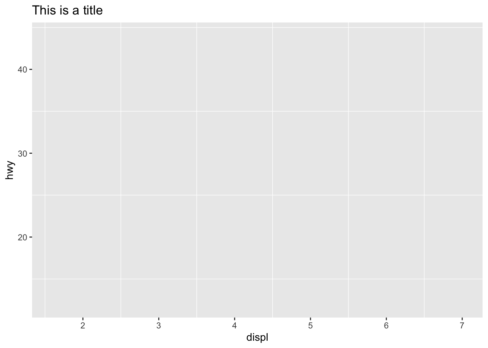
There are three basic types of elements (text, line, rect), and the setter function must match that type.
element_text() draws labels and headings. You can control the font family, face, colour, size (in points), hjust, vjust, angle (in degrees) and lineheight (as ratio of fontcase). More details on the parameters can be found in vignette("ggplot2-specs").
p + theme(plot.title = element_text(size = 30))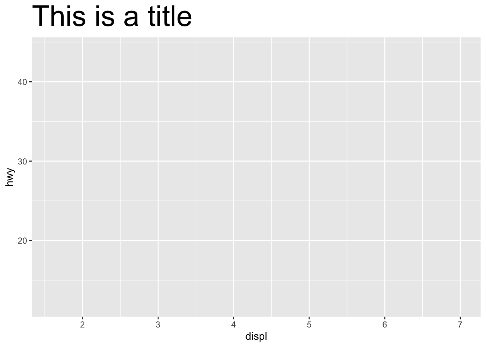
p + theme(plot.title = element_text(face = "bold", color = "red"))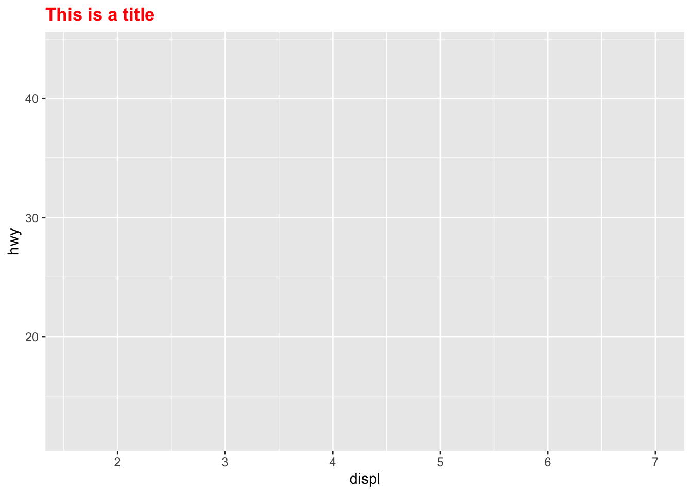
p + theme(plot.title = element_text(hjust = 1))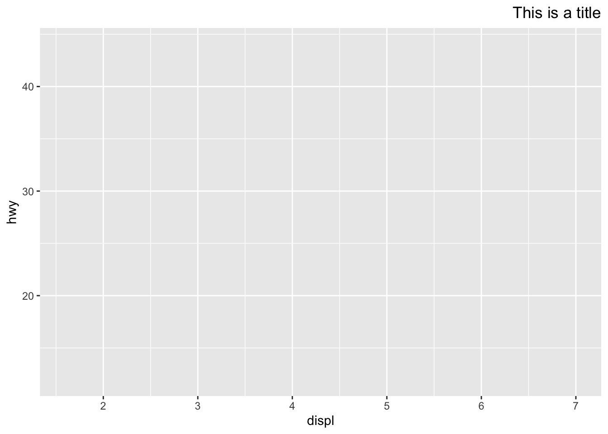
element_line() draws lines parametrized by color, size and linetype.
p + theme(panel.grid.major = element_line(color = "black"))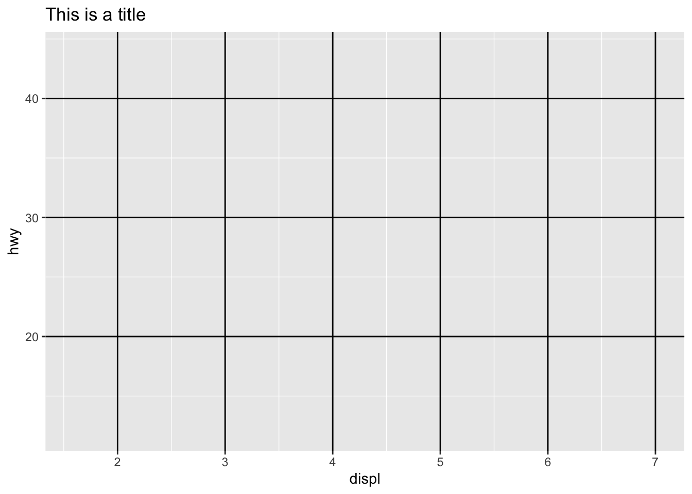
p + theme(panel.grid.major = element_line(color = "black", size = 2))Warning: The `size` argument of `element_line()` is deprecated as of ggplot2 3.4.0.
ℹ Please use the `linewidth` argument instead.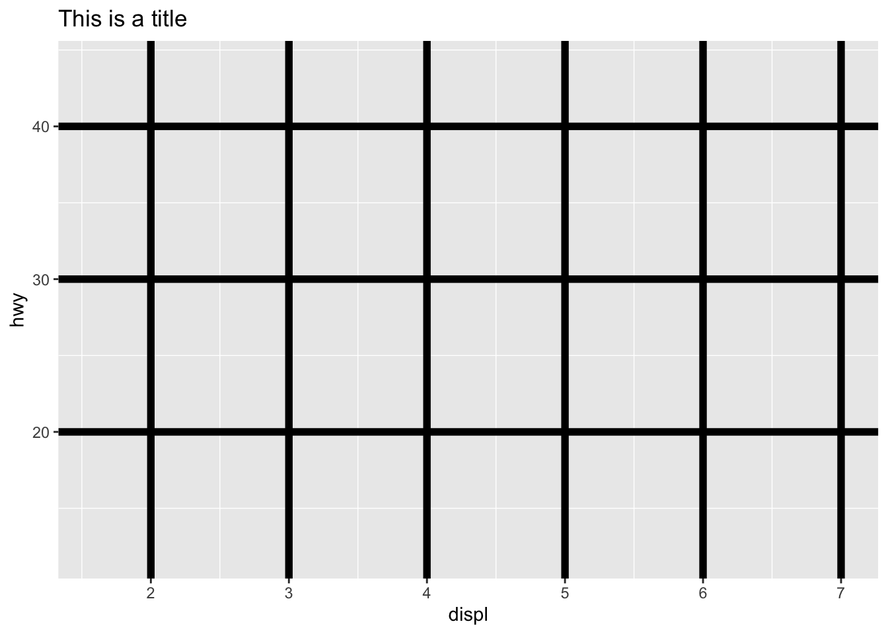
p + theme(panel.grid.major = element_line(color = "black", linetype = "dotted"))element_rect() draws rectangles, mostly used for backgrounds, parametrized by fill color and border color, size and linetype.
p + theme(plot.background = element_rect(fill = "grey80", color = NA))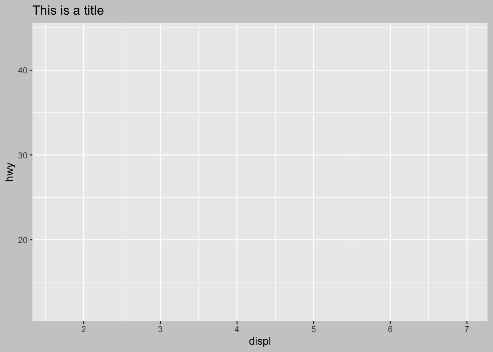
p + theme(plot.background = element_rect(color = "red", size = 2))Warning: The `size` argument of `element_rect()` is deprecated as of ggplot2 3.4.0.
ℹ Please use the `linewidth` argument instead.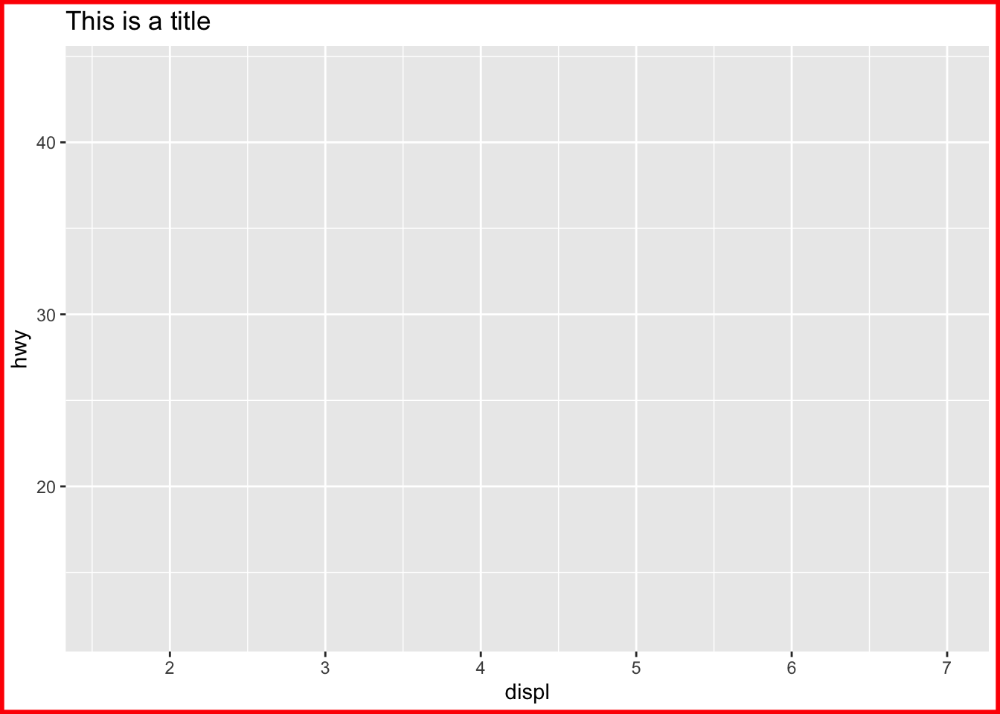
p + theme(panel.background = element_rect(fill = "linen"))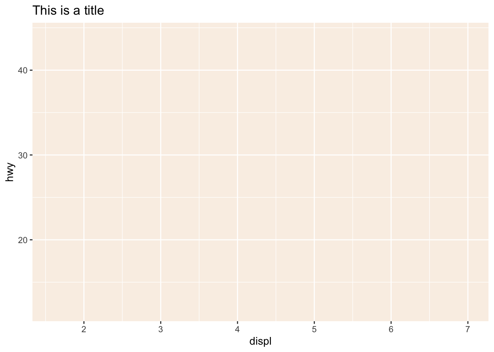
There are four general elements that affect all elements of their kind:
| Element | Setter | Description |
|---|---|---|
| line | element_line() |
Affects all line elements. |
| rect | element_rect() |
Affects all rectangular elements. |
| text | element_text() |
Affects all text elements. |
| title | element_text() |
Affects all title elements. |
| plot.margin | unit() |
Margin around the plot. |
All individual elements that can be set with element_line() inherit from line, and so on and so forth. Then, individual elements can be fine-tuned via their specific configuration option, that can be subdivided into plot, axis, legend, panel and faceting elements. These individual elements have a hierarchical structure too, meaning that e.g. axis.title.*.*, if not specified, inherits from axis.title.
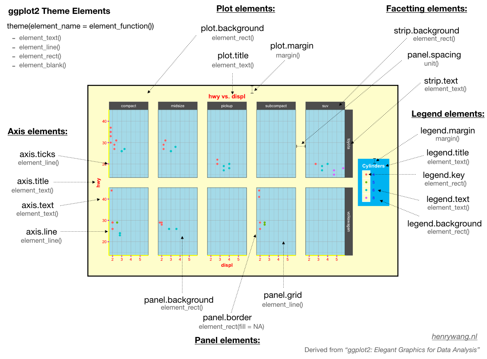
Some elements affect the plot as a whole:
| Element | Setter | Description |
|---|---|---|
| plot.background | element_rect() |
Background for the entire plot. |
| plot.title plot.subtitle plot.caption plot.tag |
element_rect() |
Plot title, subtitle, caption and tag. Elements subtitle, caption and tag inherit from title by default, but can be set separately. |
| plot.title.position plot.caption.position |
character | Alignment of title (affects subtitle too) and caption (“panel” and “plot”, which align with and without margins respectively). |
| plot.tag.position | character or numeric | Aligment of tag (“topleft”, “top”, “topright”, “left”, “right”, “bottomleft”, “bottom”, “bottomright”, or a coordinate). |
| plot.margin | unit() |
Margin around the plot. |
By default, ggplot2 uses a white background to ensure that the plot can be read no matter where it is placed. Sometimes you may want to blend it with the background color of a document (e.g., a presentation), in which case it is useful to set a transparent background with fill=NA. In a similar way, if the destination document already defines margins around the plot, you may want to eliminate those.
p + theme(
plot.background = element_rect(fill="blue", color="red", size=3),
plot.title = element_text(size = 30),
plot.margin = margin(50, 10, 10, 10)
)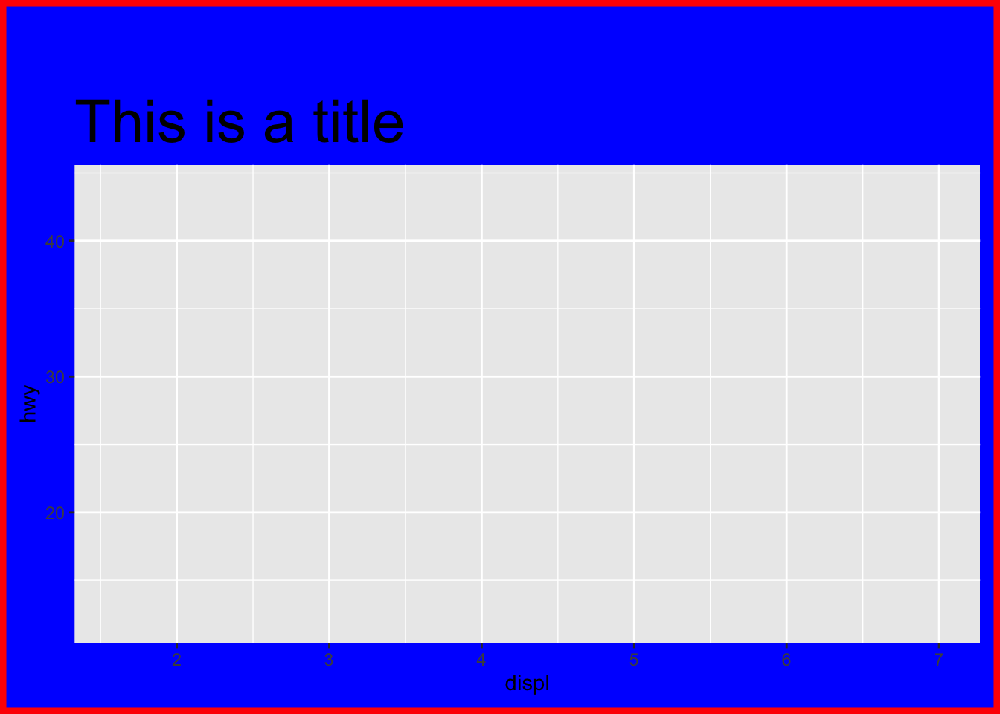
The axis elements control the appearance of the axes:
| Element | Setter | Description |
|---|---|---|
| axis.title axis.title.x axis.title.x.top axis.title.x.bottom axis.title.y axis.title.y.left axis.title.y.right |
element_text() |
Axis titles. |
| axis.text axis.text.x axis.text.x.top axis.text.x.bottom axis.text.y axis.text.y.left axis.text.y.right |
element_text() |
Axis tick labels. |
| axis.ticks axis.ticks.x axis.ticks.x.top axis.ticks.x.bottom axis.ticks.y axis.ticks.y.left axis.ticks.y.right |
element_line() |
Axis tick marks. |
| axis.ticks.length axis.ticks.length.x axis.ticks.length.x.top axis.ticks.length.x.bottom axis.ticks.length.y axis.ticks.length.y.left axis.ticks.length.y.right |
unit() |
Length of tick marks. |
| axis.line axis.line.x axis.line.x.top axis.line.x.bottom axis.line.y axis.line.y.left axis.line.y.right |
element_line() |
Line parallel to axis (hidden in default theme). |
Note that anything set for axis.line is inherited by axis.line.x and axis.line.y.
p + theme(
axis.line = element_line(size=5),
axis.line.y = element_line(color="red"),
)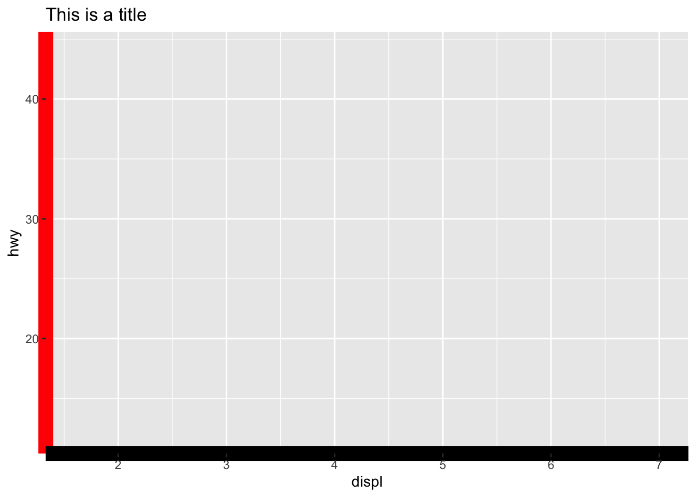
A common task is to rotate labels to avoid overlap of very long labels.
p +
scale_x_continuous(labels=scales::label_number(prefix="a very long label ")) +
theme(axis.text.x = element_text(angle=45, vjust=1, hjust=1))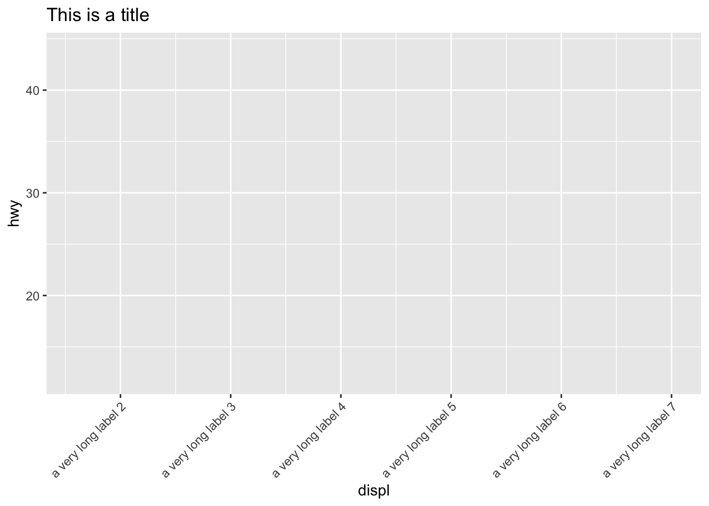
The legend elements control the appearance of all legends. You can also modify the appearance of individual legends by modifying the same elements in guide_legend() or guide_colourbar().
| Element | Setter | Description |
|---|---|---|
| legend.background | element_rect() |
Background of legend. |
| legend.margin | margin() |
Margin around each legend. |
| legend.spacing legend.spacing.x legend.spacing.y |
unit() |
Spacing between legends. |
| legend.key | element_rect() |
Background of legend keys. |
| legend.key.size legend.key.height legend.key.width |
unit() |
Legend key size. Height and width inherit from size unless specified separately. |
| legend.text | element_text() |
Legend item labels. |
| legend.text.align | 0–1 | Legend label alignment (0 = right, 1 = left). |
| legend.title | element_text() |
Title of legend. |
| legend.title.align | 0–1 | Legend title alignment (0 = right, 1 = left). |
| legend.position | character or numeric | Position of legends (“none”, “left”, “right”, “bottom”, “top” for outside placement; two-element numeric vector for inside placement: 0 = bottom/left, 1 = top/right). |
| legend.direction | character | Layout of items in legends (“horizontal” or “vertical”). |
| legend.justification | character or numeric | Anchor point for legend positioning (“center” or two-element numeric vector: 0 = bottom/left, 1 = top/right). |
| legend.box | character | Arrangement of multiple legends (“horizontal” or “vertical”). |
| legend.box.just | character | Justification of each legend (“top”, “bottom”, “left”, “right”). |
| legend.box.margin | margin() |
Margin around full legend area. |
| legend.box.background | element_rect() |
Background of legend area. |
| legend.box.spacing | unit() |
Spacing between plotting area and legend box. |
A common task is to modify legend placement.
p1 <- p + geom_point(aes(color=factor(cyl)))
p1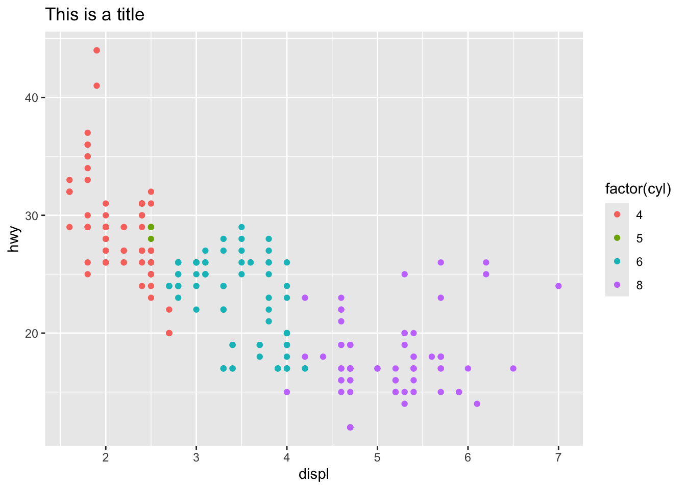
p1 + theme(
legend.position = "top",
legend.justification = "right"
)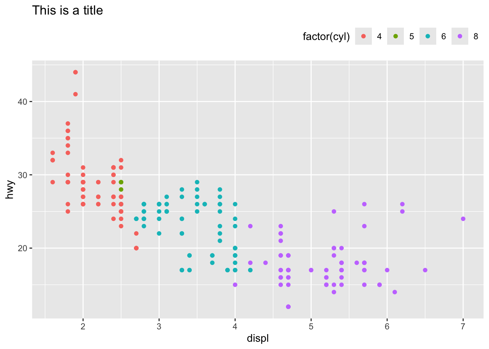
p1 + theme(
legend.position = c(1, 1),
legend.justification = c(1, 1)
)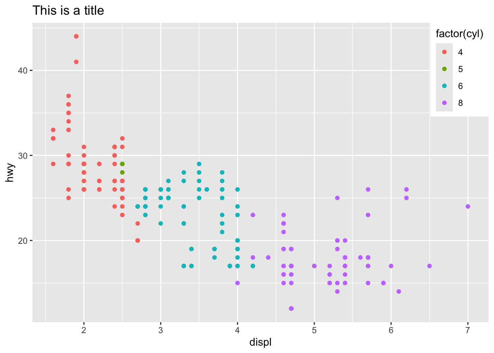
p1 + theme(
legend.position = c(1, 1),
legend.justification = c(1, 1),
legend.background = element_rect(fill=NA)
)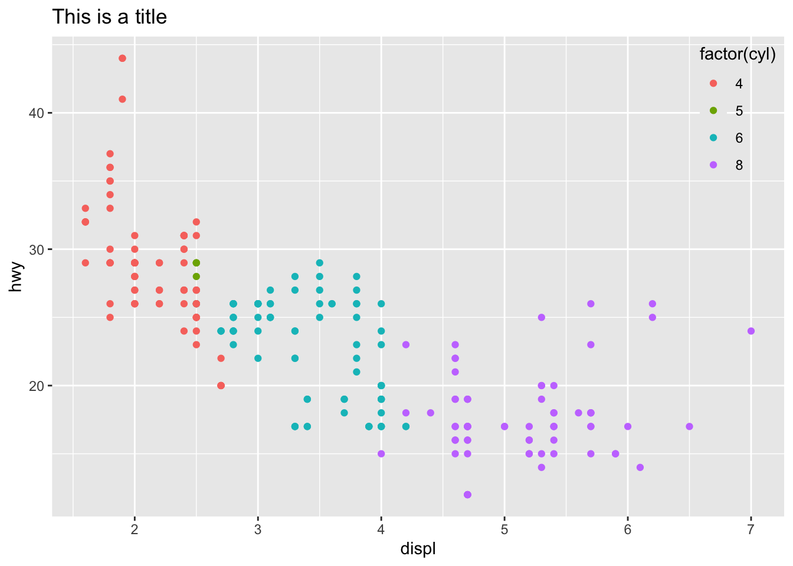
Panel elements control the appearance of the plotting panels:
| Element | Setter | Description |
|---|---|---|
| aspect.ratio | numeric | Aspect ratio of the panel. |
| panel.background | element_rect() |
Background of plotting area (under data). |
| panel.border | element_rect() |
Border around plotting area (over data). |
| panel.grid panel.grid.major panel.grid.major.x panel.grid.major.y panel.grid.minor panel.grid.minor.x panel.grid.minor.y |
element_line() |
Grid lines. Major and minor grid lines, as well as individual ones for axis x and y, can be specified separately. |
| panel.ontop | logical | Option to place the panel over the data layers (usually used with a transparent or blank panel.background). |
Note that aspect.ratio fixes the aspect ratio of just the panel, but not the plot.
p + theme(aspect.ratio = 2/1)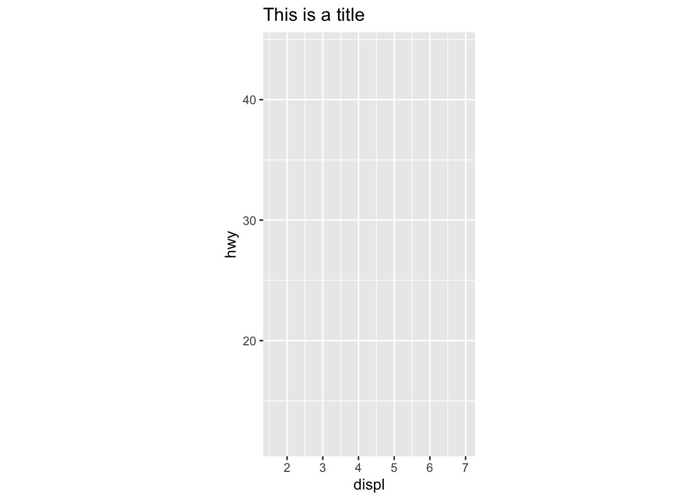
The following theme elements are associated with faceted ggplots:
| Element | Setter | Description |
|---|---|---|
| panel.spacing panel.spacing.x panel.spacing.y |
unit() |
Spacing between facets. |
| strip.background strip.background.x strip.background.y |
element_rect() |
Background of facet labels. |
| strip.placement | character | Placement of facet labels with respect to axes (“inside” or “outside”). |
| strip.text strip.text.x strip.text.y |
element_text() |
Facet labels. |
| strip.switch.pad.grid strip.switch.pad.wrap |
unit() |
Space between facet labels and axes when strips are switched. |
Note that strip.text.x affects both facet_wrap() and facet_grid(), but strip.text.y only affects facet_grid().
theme_dark() makes the inside of the plot dark, but not the outside. Change the plot background to black, and then update the text settings so you can still read the labels.Setting fonts is a tricky issue. The reason is that we have to rely on the few fonts available to R by default. If a font is not available, a default one will be used instead. For example, compare this to Futura:
p +
theme(text = element_text(family="Futura")) +
labs(subtitle="This is not Futura")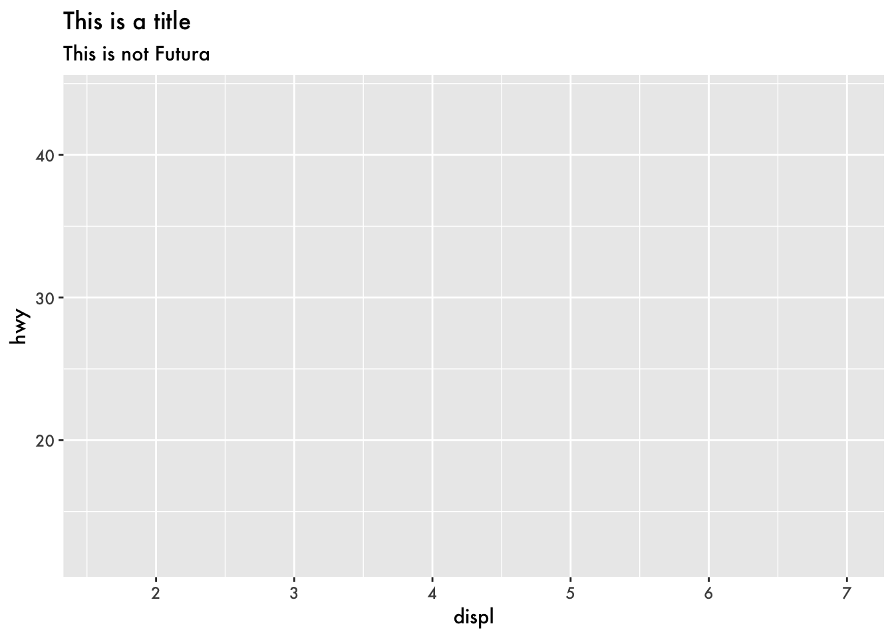
Even if this font is installed in your system (which most probably will not, because it is a non-free font), it is not available to R by default. There are packages, such as extrafont, that makes it easier to use your system fonts, or arbitrary font files, in R. But there is a better way.
The easiest way of ensuring reproducible results across platforms is to select a free font available in Google Fonts, and then apply it to your theme. For this, we need to install the showtext package, and a couple of additional commands. In this example, we apply the nice handwritten font Caveat:
sysfonts::font_add_google("Caveat", family="caveat")
showtext::showtext_auto()
p + theme(text = element_text(family="caveat"))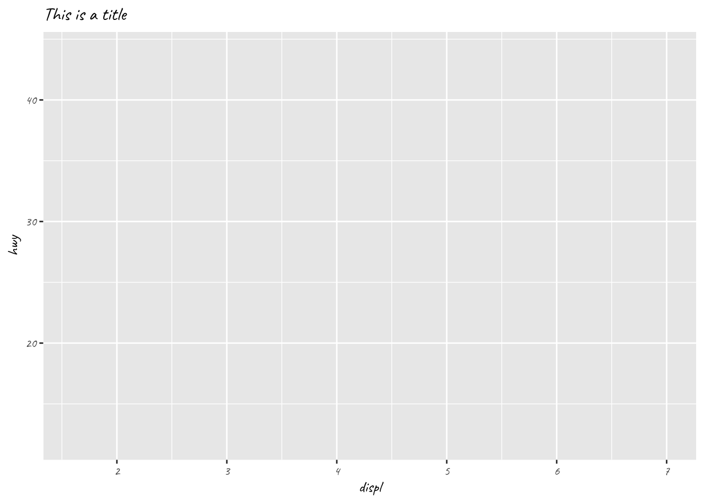
Note also that font selection is so important for the look and feel of a graphic that many predefined themes provide specific arguments to change the font family and size.
p + theme_bw(base_family="caveat")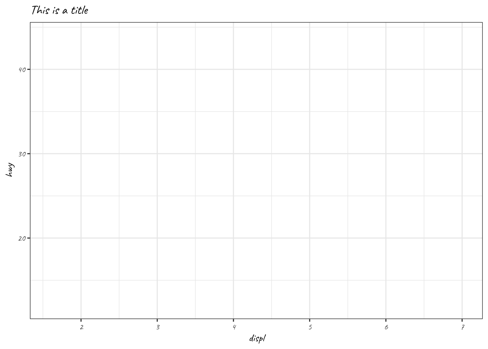
The DPI, or Dots Per Inch, is a measure of image resolution. RStudio’s Plot pane uses a resolution of only 96 DPI for speed reasons, but ggsave() uses a default of 300 DPI, which is the standard quality for printing. The issue with showtext is that DPI is not automatically detected. It works well for 96 DPI (so plots in the panel look fine), but it needs to be set manually for higher DPIs. E.g., the font here will look too small:
ggsave("test_96.png", p + theme_bw(base_family="caveat"))Saving 7 x 5 in imageTherefore, you must set the proper DPI beforehand:
showtext::showtext_opts(dpi=300)
ggsave("test_300.png", p + theme_bw(base_family="caveat"))Saving 7 x 5 in imageshowtext::showtext_opts(dpi=96) # reset defaultFor R Markdown documents, there is a special chunk option, fig.showtext=TRUE, that performs this for you:
library(ggplot2)
sysfonts::font_add_google("Caveat", family="caveat")
my_theme <- function() {
theme_classic() +
theme(axis.line = element_line(color="blue"))
}
theme_set(my_theme())
p <- ggplot(mpg) +
aes(displ, hwy) +
geom_point(aes(color=factor(cyl)))
p + theme(text = element_text(family="caveat"))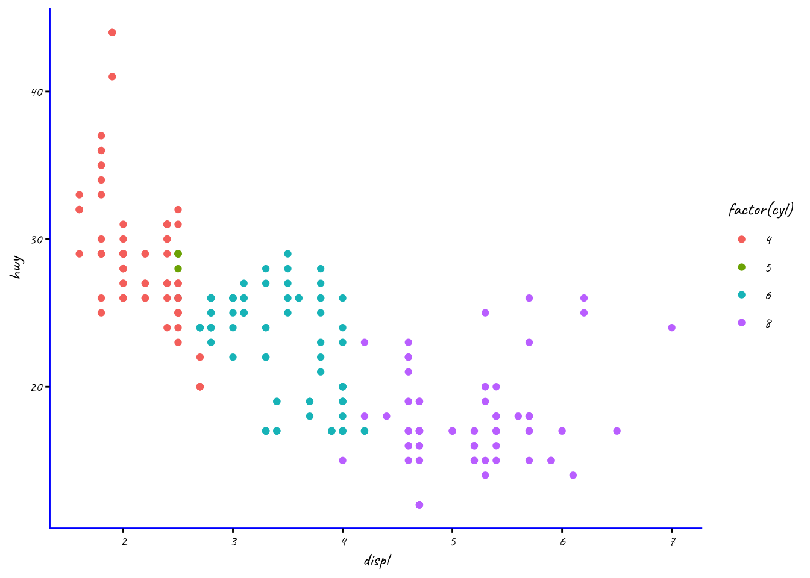
See this issue for further discussion.
Sometimes we find a nice font that we would like to use in a graph (or, in general, in any document). How to figure out which font it is?, or, at least, a similar one… There are two levels of difficulty here depending on the source medium:
A webpage: If the intended font is included in some webpage, you are in luck, because these are the easiest to figure out. One way is to manually search in the source code of the webpage: with a right-click on the text, you need to choose the menu item that opens the page’s code (Inspect in Chrome), then you can look for a CSS property called font-family in the Styles tab. An even easier way is to just copy the text and paste it in a document (e.g. a Google Docs). The font family will be automatically recognized.
An image: (Or anything that can be saved as an image). There are multiple online services dedicated to identifying fonts in images. A popular one is What The Font.